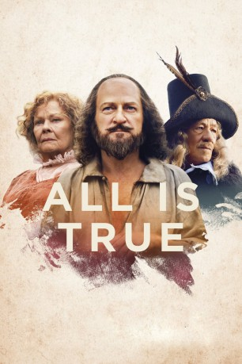
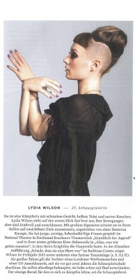

#11599 All is True
 
 IMDB-Wertung: 6.1 / 10
IMDB-Wertung: 6.1 / 10  Metascore: 59
Metascore: 59 
ALL IS TRUE erforscht die Geschichte einer düsteren und wenig bekannten Periode im Leben William Shakespeares (Kenneth Branagh). Wir befinden uns im Jahr 1613 und Shakespeare ist bereits der berühmteste Schriftsteller seiner Zeit. Als sein geliebtes Globe Theatre niederbrennt, entschließt er sich in seine Heimatstadt Stratford-upon-Avon zurückzukehren, wo er seiner vernachlässigten Familie gegenübertritt. Trotz der Erinnerungen an den Tod seines Sohnes Hamnet versucht er, die zerrüttete Beziehung zu seiner Frau Anne (Judy Dench) und seiner Tochter wiederherzustellen. Doch dies zwingt ihn dazu, sich sein Versagen als abwesender Ehemann und Vater einzugestehen. Um seinen Seelenfrieden zu erlangen, muss er sich schließlich auch den dunklen Geheimnissen und Lügen seiner Familie stellen.
Jahr: 2018
Dauer: 101 Minuten
FSK:
Land: England Studio: Sony Pictures ClassicsTonspuren: DD5.1 - ,
Untertitel: Deutsch, Englisch,
Auflösung: 1080p (1920x796) Größe: 3840 MB
Genre: Drama, Geschichte, Biographie
Regisseur:  Kenneth Branagh
Kenneth Branagh
Drehbuch: Ben Elton
Soundtrack: Patrick Doyle
Darsteller:
 Kenneth Branagh als William Shakespeare
Kenneth Branagh als William Shakespeare Judi Dench als Anne Hathaway
Judi Dench als Anne Hathaway Ian McKellen als Henry Wriothesley
Ian McKellen als Henry Wriothesley- Lolita Chakrabarti als Stratford Landlady Lena
- Jack Colgrave Hirst als Tom Quiney
- Eleanor de Rohan als Margaret Wheeler
 Phil Dunster als Henry
Phil Dunster als Henry- Hadley Fraser als Shakespeare's son-in-law
- Ian Hearnshaw als Townsman
- Cassandra Hodges als Townswoman
 Gerard Horan als Ben Jonson
Gerard Horan als Ben Jonson- Matt Jessup als Frank
- Michael Rouse als Francis Collins
 Harry Lister Smith als Jack Cade
Harry Lister Smith als Jack Cade- Kathryn Wilder als Judith Shakespeare
-  Lydia Wilson als Susanna Shakespeare
 Jimmy Yuill als Edward Woolmer
Jimmy Yuill als Edward Woolmer- Doug Colling als Douglas
- Freya Durkan als Young Judith Shakespeare
- Flora Easton als Young Susanna Hall
- Sam Ellis als Hamnet Shakespeare
- Sabi Perez als Maria
- Kate Tydman als Lady Lucy
Datei: X:\2018(A-F)\All is True (2018, FSK, 1920x796).mkv seit 13.08.2019
Festplatte: HD 2017(A-Z)-2018(A-F)
 Es gibt insgesamt 151 Filme in der Gruppe '2018(A-F)'
Es gibt insgesamt 151 Filme in der Gruppe '2018(A-F)'